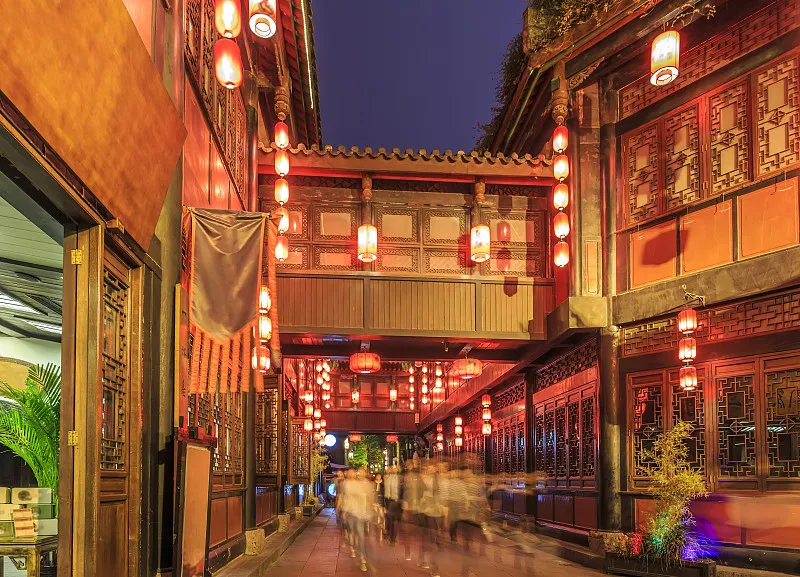

成都市，简称“蓉”，别称蓉城、锦城，四川省辖地级市，省会、副省级市、超大城市、国家中心城市、世界美食之都。 成都自古有“天府之国”的美誉，是首批国家历史文化名城，古蜀文明发祥地，中国最佳旅游城市。境内金沙遗址有3000年历史，周太王以“一年成聚，二年成邑，三年成都”，故名成都。
纪念的是蜀国丞相诸葛亮，明朝初年并入汉昭烈庙，也是全国影响最大的三国遗迹博物馆。 由惠陵、汉昭烈庙、武侯祠三部分组成。祠内供奉刘备、诸葛亮等蜀汉英雄塑像50尊。 武大门、二门、刘备殿、过厅、诸葛亮殿、三义庙等，排列在从南到北的一条中轴线上。
锦里是一条仿古商业街，是成都人气最旺景点之一，也是成都武侯祠博物馆的一部分。 在这里，你可以欣赏捏泥人、摆糖画的手艺，也可以逛逛极富三国特色的店铺。 街里还有各种四川特色小吃，各种茶楼、咖啡馆、酒吧、客栈等随时可落座。
大熊猫繁育科研机构，完全模拟大熊猫野外生活环境，建有湖泊、溪流、竹林、草坪等，共饲养100多只大熊猫。 大门附近有个大熊猫博物馆，可在熊猫国邮政局寄出盖有熊猫邮戳的明信片，还可在电影院看有关大熊猫的纪录片。
开放时间
全天 (1月1日-12月31日 周一-周日)
开放时间
全天 (1月1日-12月31日 周一-周日)
开放时间
08:00-18:00(夏季)；08:00-17:30(冬季)；
开放时间
08:00-18:00(夏季);08:00-17:30(冬季)
开放时间
09:00-18:00；停止入场时间:17:00
开放时间
10:00-17:00(融创乐园开放时间)